Scene 1Warm-Up
▶ Start hereHow your Wonder Films lessons work1-minute videoOpen ▾
🎯 TodayI can…
- describe an ecosystem by naming its organisms, habitat, and environmental conditions.
- explain why some organisms survive well in a habitat while others cannot survive there at all.
- explain one reason why protecting a national park ecosystem matters for the organisms that live there.

🔎 Mystery specimenSmall cone, big secret?
What to do: Press Inspect specimen. Move the magnifying lens over the cone, then tap 3 things you notice.
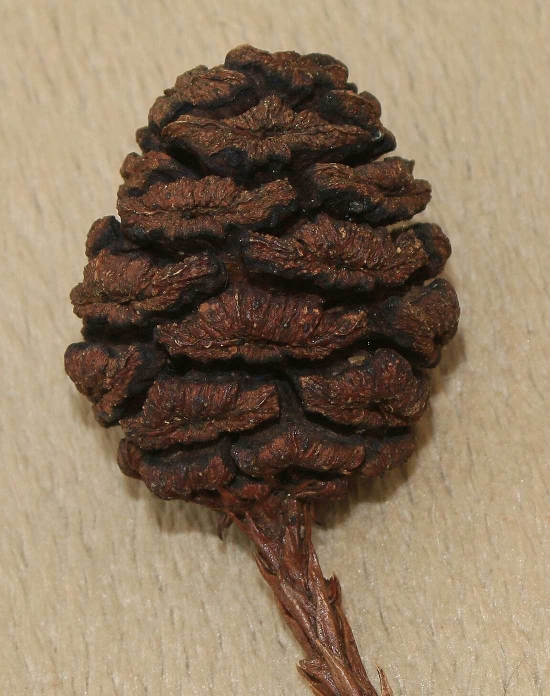
📚 Word WallWords scientists use
What to do: Tap or click each card to flip it and read what the word means.
Scene 2The Lesson
🌿 Part 1What Is an Ecosystem?
Every national park is an ecosystem. It includes every plant, animal, and other organism that lives there, plus nonliving things like water, soil, temperature, and sunlight. These parts interact all the time. A tree shades the soil. A frog eats insects and gets eaten by a heron. Rain fills a pond. When scientists study a park, they look at the habitat, the organisms, and the environmental conditions together.
🎞️ Put the scenes in orderWhat happened when wolves came home?
What to do: Drag each photo into the film strip, from first to last. You can also tap a photo, then tap a frame. Get the order right and your strip becomes a movie.
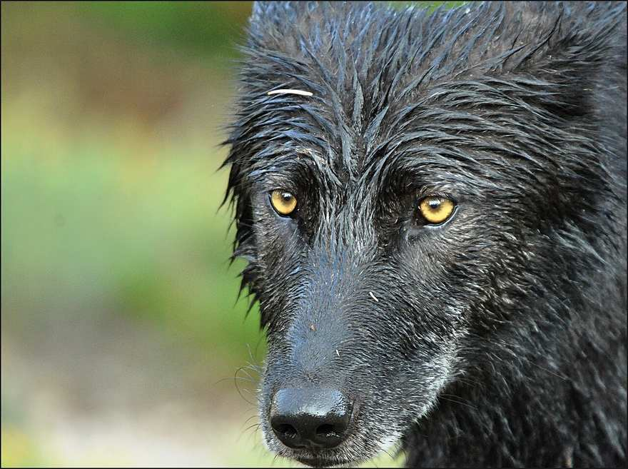
Ben says, "One kind of animal doesn't matter to a whole park." What do you think?
🐊 Part 2Who Can Survive Here?
Not every organism can survive in every place. In any habitat, some organisms survive well, some survive less well, and some cannot survive at all. An alligator could not live in a snowy mountain forest, but in the warm, wet Everglades it does just fine. South Florida is the only place on Earth where alligators and crocodiles live side by side.
🧪 The Winter TestHow does each animal get through winter?
What to do: Follow the steps one at a time. You will pick, test, and then explain.
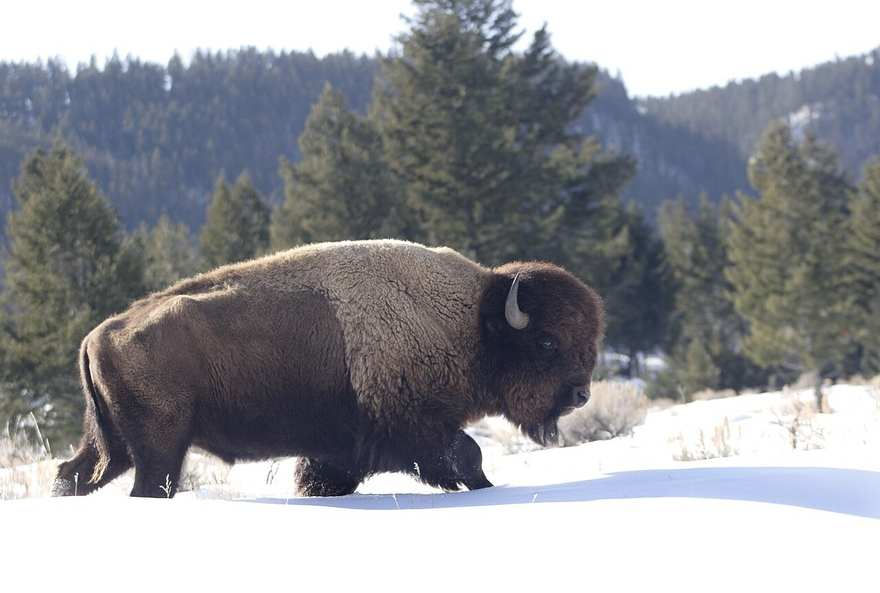
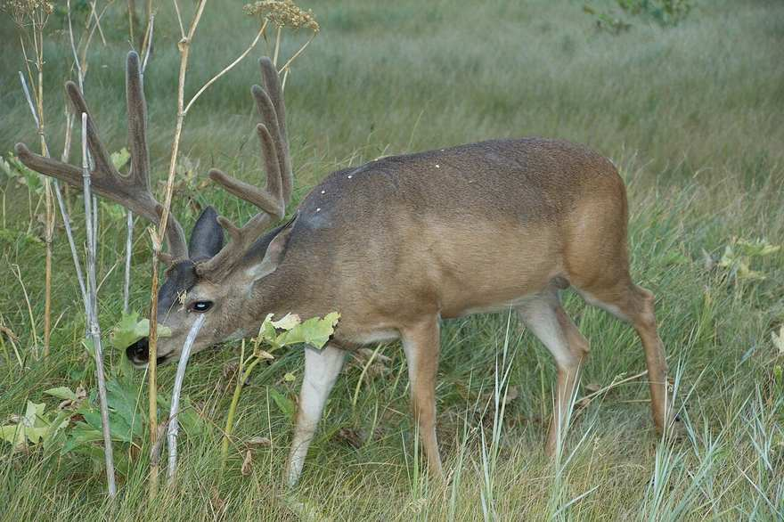
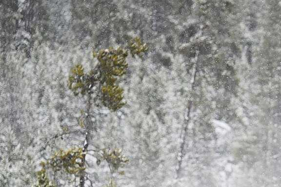
Deep snow over the grass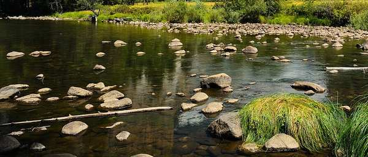
A lower valley, little snow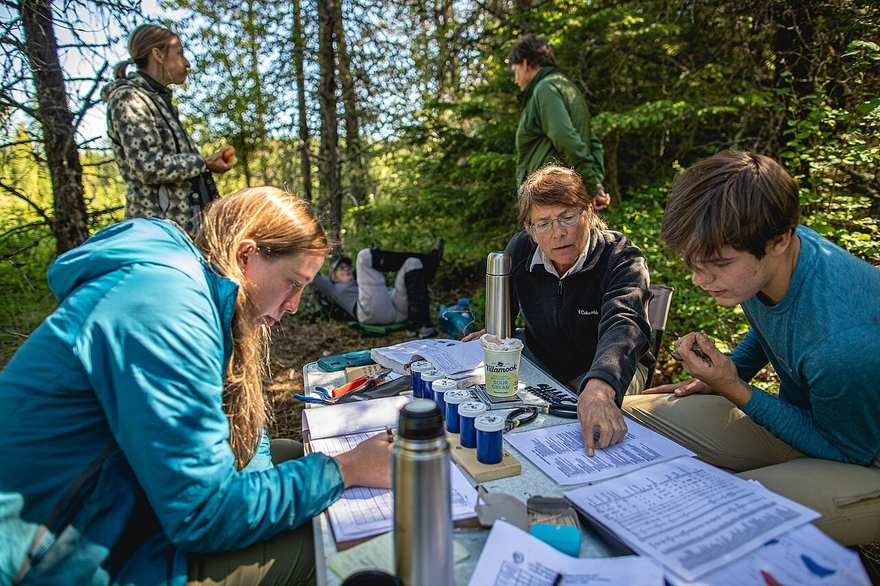
📣 Part 3Protecting Parks, and Sharing What We Learn
Droughts, floods, wildfires, and hurricanes can change a park quickly. People change parks too, with pollution, building, and invasive species. That's why conservation matters.
Scientists and rangers collect evidence: observations and measurements of the organisms and conditions. Then they communicate. They share their findings in reports, talks, and maps, so other scientists can check the results and park managers can use them to protect the park.
🛂 The Park PassportCollect four park stamps, one stop at a time
What to do: First, make a prediction. Then brush the glowing stamp: drag across it (or tap it again and again) until the photo shows.
Do you predict the same environmental condition matters most in every park?
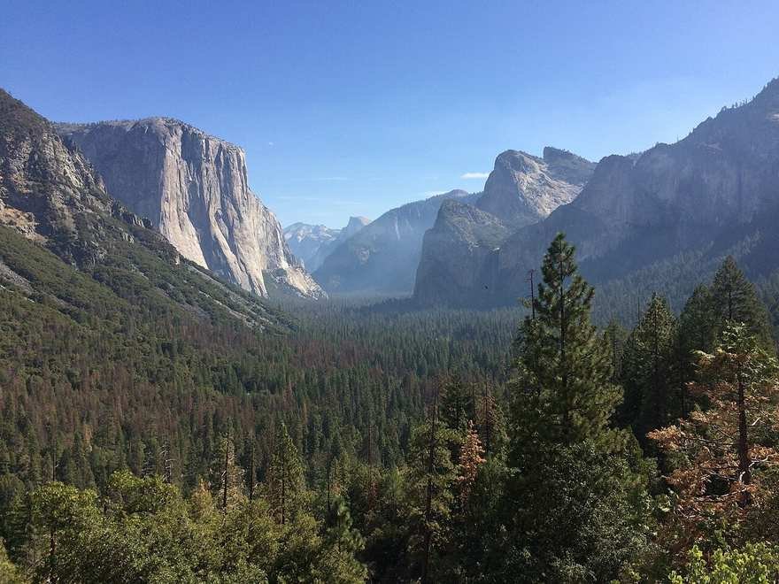
 Stamp 1
Stamp 1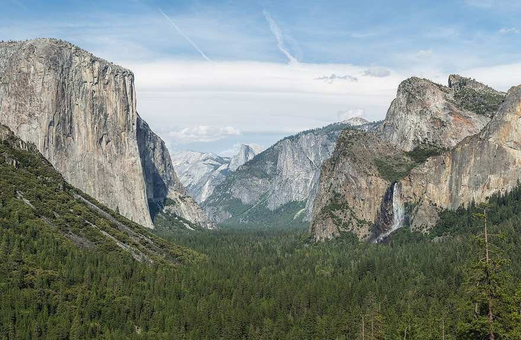
Stamp 2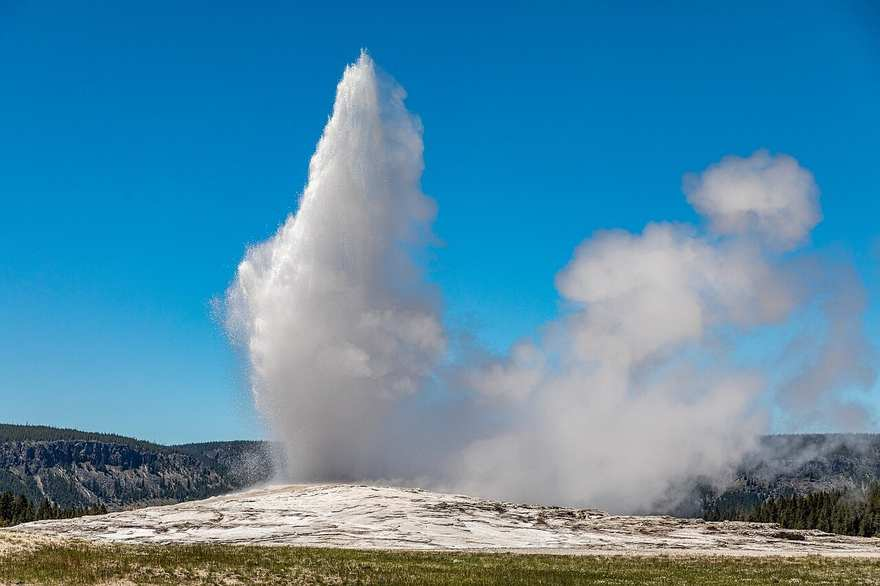
Stamp 3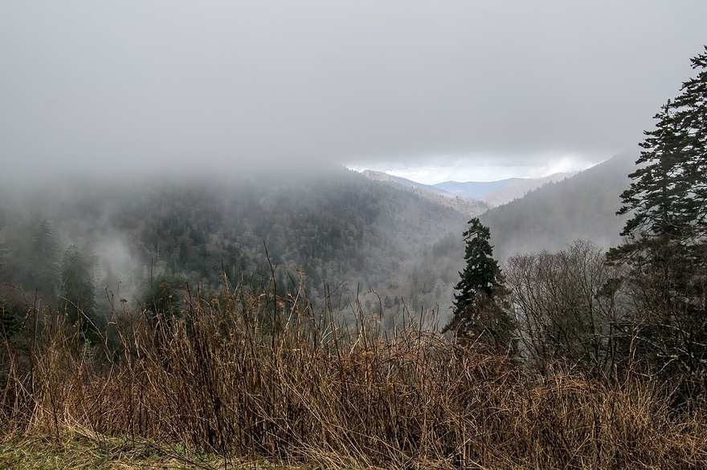
Stamp 4Conditions decide who lives where. Water, temperature, height, and rainfall shape each park. The organisms that live there are the ones that fit those conditions.
Mia says, "National parks are protected, so nothing ever changes there." What do you think?
The Salamander Capital
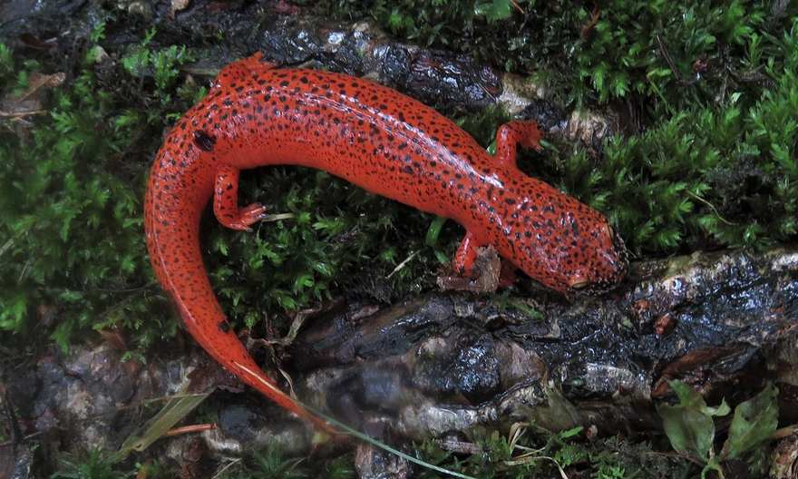
Great Smoky Mountains National Park is called the Salamander Capital of the World. About 30 kinds live in its cool, wet forests.
Scientists and volunteers count salamanders year after year and share what they find, so everyone can see if the forest is staying healthy.
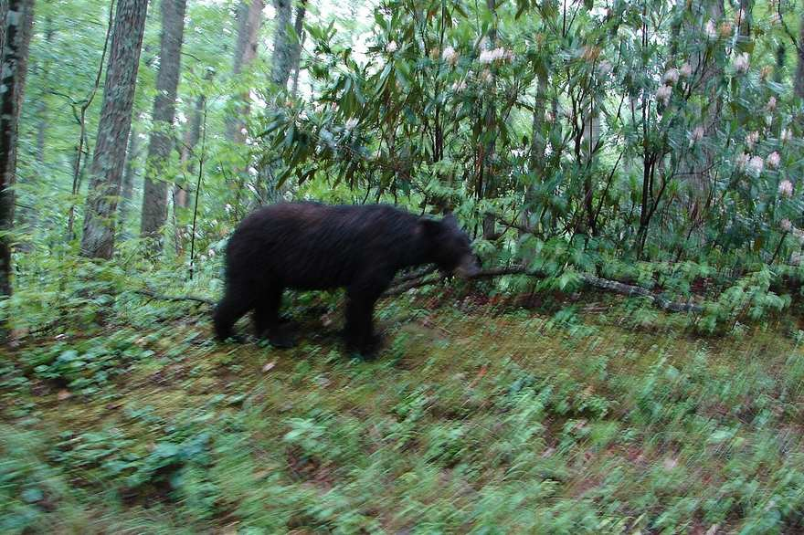
🕵️ Part 4Park Files
What to do: Pick 3 cards, one at a time. Tap a feature that helps it survive, then name its home park. Predict if it could survive in a different park, and see the evidence.
| Card | Survival feature | Home park | In another park | My evidence |
|---|
🗂️ Sort the movesUse your evidence to sort the moves OPTIONALOpen ▾
What to do: Pick one you solved. Pick the group it belongs in, then tap the other ones that belong in the same group.
Pick one from your chart and explain it.
Start with: "Card __ has…"
Scene 3Self-Check
What does an organism's habitat provide?
A polar bear is built for icy, cold environments. What would happen if a polar bear was placed in a hot, wet rainforest habitat?
Scientists at Yellowstone brought wolves back after they had been gone for about 70 years. Why did this matter for the whole ecosystem?
Scene 4Assignment
🔍 Part ALiving or nonliving?
What to do: Read each one. Pick the best answer.
1. Is an alligator living or nonliving?
2. Is sunlight living or nonliving?
3. Is sawgrass living or nonliving?
4. Is rainfall living or nonliving?
5. Is soil living or nonliving?
🚀 Part BShort answer
What to do: Pick one park from today: the Everglades, Yosemite, Yellowstone, or the Great Smoky Mountains. Answer in complete sentences.
1. Describe your park. Name two organisms that live there and explain how the environmental conditions match their needs.
2. Why do scientists say that protecting one national park habitat helps many different organisms, not just one species?
✍️ Write and explainPick one organism from a national park. Can it survive in a completely different habitat? Use what you learned to explain your thinking.
What to do: Pick one from your evidence chart. Answer the three questions. Use at least one of the science words under the boxes.
Start with: "I think that [organism's name] could / could not survive in [different habitat] because…"
Start with: "I know this because the lesson showed that…"
Start with: "This makes sense because…"
🎨 Part CDraw and label
What to do: Draw a simple ecosystem scene from the park you picked. Show at least four organisms in their habitat. Label each organism, and draw one arrow showing how one thing connects to another (like wolf → elk).
🎬 Your question from Scene 1Can you answer it now?
What do you still wonder about? Write your question here. Then answer it.
📋 My answersEverything you wrote, in one place
(Your answers show up here as you write.)
How to turn in: Copy your answers and paste them into the Canvas assignment. Or download the file and upload it. Then press Save my drawing in Part C and upload your drawing too.
✅ Checklist
What to do: Tap each item when it is done. Items you finish on the page check themselves.
- My evidence chart has 3 park files and my explanation.
- Part A: all five answered.
- Part B: questions 1 and 2.
- Part C: my drawing, labels, and arrow.
- Write and explain, with at least one science word.
🎬 Premiere my park reportYour exhibit
What to do: Check your exhibit. Pick the one you wrote about, add your first name, then press Premiere film.
I observed…
Its home park…
My evidence…
It tells us…
🎞️ This film's frames
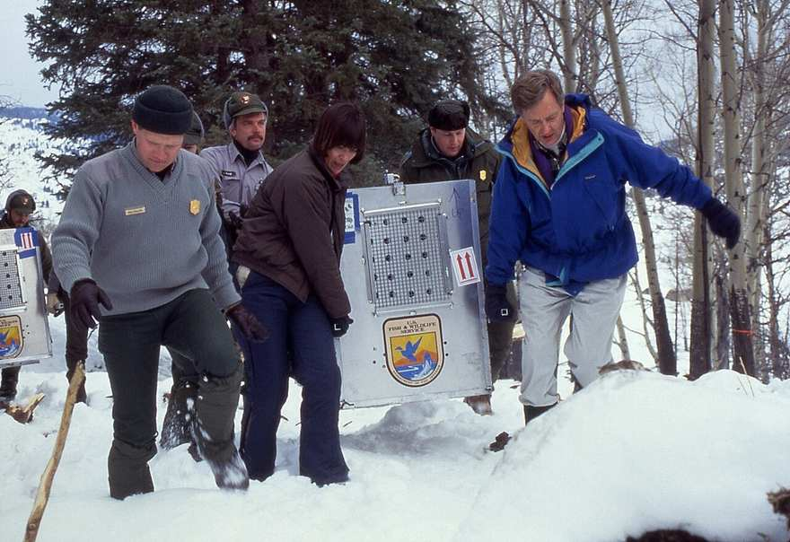
Wolves come home
The Winter Test
The Park Passport
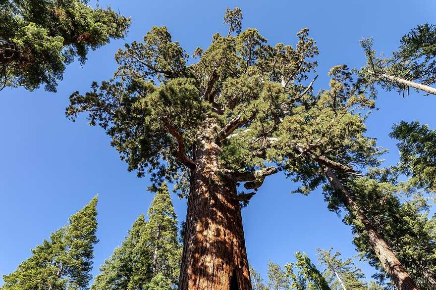
Park files
Earn all four frames in the Lesson, then finish the checklist.
🔜 Coming up nextComing up next: 32.02
Build a Park Ecosystem Presentation. Next time, you'll turn your park research into a presentation and share it, just like real scientists.
Photo and music credits
- Scientists record data about birds (51361814733), GlacierNPS, Public domain
- Gator on Anhinga Trail (5632544106), Everglades NPS from Homestead, Florida, United States, Public domain
- Bison in Snow - Flickr - YellowstoneNPS, Yellowstone National Park, Public domain
- Roseate Spoonbill, NPSPhoto (9101514610), Everglades NPS from Homestead, Florida, United States, Public domain
- El Capitan and Valley View, Melgna, CC BY-SA 4.0
- Yosemite National Park (CA, USA), Mariposa Grove of Giant Sequoias, Grizzly G…, Dietmar Rabich, CC BY-SA 4.0
- Sawgrass Prairie NPS Photo G Gardner (42295786392), evergladesnps, Public domain
- 9738 Yellowstone bison JF, Wolves201, CC BY-SA 4.0
- View of Great Smoky Mountains from Crest of Newfound Gap Road, Great Smoky Mo…, Ken Lund from Reno, Nevada, USA, CC BY-SA 2.0
- Gray Wolf (7828692538), Shanthanu Bhardwaj, CC BY-SA 2.0
- Mule deer in Yosemite Valley, Constantine Kulikovsky, CC BY 3.0
- Bison in deep snow (11951121835), Yellowstone National Park from Yellowstone NP, USA, Public domain
- Black-chinned red salamander--Shannon Welch (42329451184), Great Smoky Mountains National Park from Gatlinburg, TN, Public domain
- River of Grass (1), NPSPhoto, Brian Call (9101714682), Everglades NPS from Homestead, Florida, United States, Public domain
- Yellowstone National Park (WY, USA), Old Faithful Geyser -- 2022 -- 2599, Dietmar Rabich, CC BY-SA 4.0
- Yellowstone Natl Park poster 1938, National Park Service, Public domain
- Youth from the Denali Summer Science Academy learn the process of capturing a…, NPS Photo / Emily Mesner, Public domain
- See America LCCN98518589, Work Projects Administration Poster Collection, Public domain
- Everglades National Park 3c 1947 issue U.S. stamp, Bureau of Engraving and Printing., Public domain
- Tunnel View, Yosemite Valley, Yosemite NP - Diliff, Diliff, CC BY-SA 3.0
- Valley View Yosemite August 2013 002, King of Hearts, CC BY-SA 3.0
- Black bears in Great Smoky Mountains National Park (2654136614), Mark Ordonez from Schaumburg, IL, USA, CC BY-SA 2.0
- The Smoky Mountains (51955706990), Mark Collins, CC BY 2.0
- Elk (Wapiti) in Gibbon River during winter at Yellowstone National Park (d384…, NPS Photo, Public domain
- The first wolf arrives in Yellowstone at the Crystal Bench Pen (Mike Phillips…, Yellowstone National Park, Public domain
- Elk in winter, Marey0, CC BY-SA 4.0
- Tall willows with elk-winter (26445044831), Oregon State University, CC BY-SA 2.0
- Sequoiadendron giganteum cone, cultivated, Scotland, S. Rae from Scotland, UK, CC BY 2.0
- Yosemite Mule Deer, Bramans, CC BY-SA 4.0
- Music: The Stars and Stripes Forever (John Philip Sousa), "The President's Own" United States Marine Band (2017), public domain recording (via Wikimedia Commons).
- Opti the owl: Optima Academy. Sound effects are made by the page. The wolf movie, the Winter Test, and the Park Passport are models; every place photo is real. The cone photo was taken in Scotland, where giant sequoias are planted in gardens.